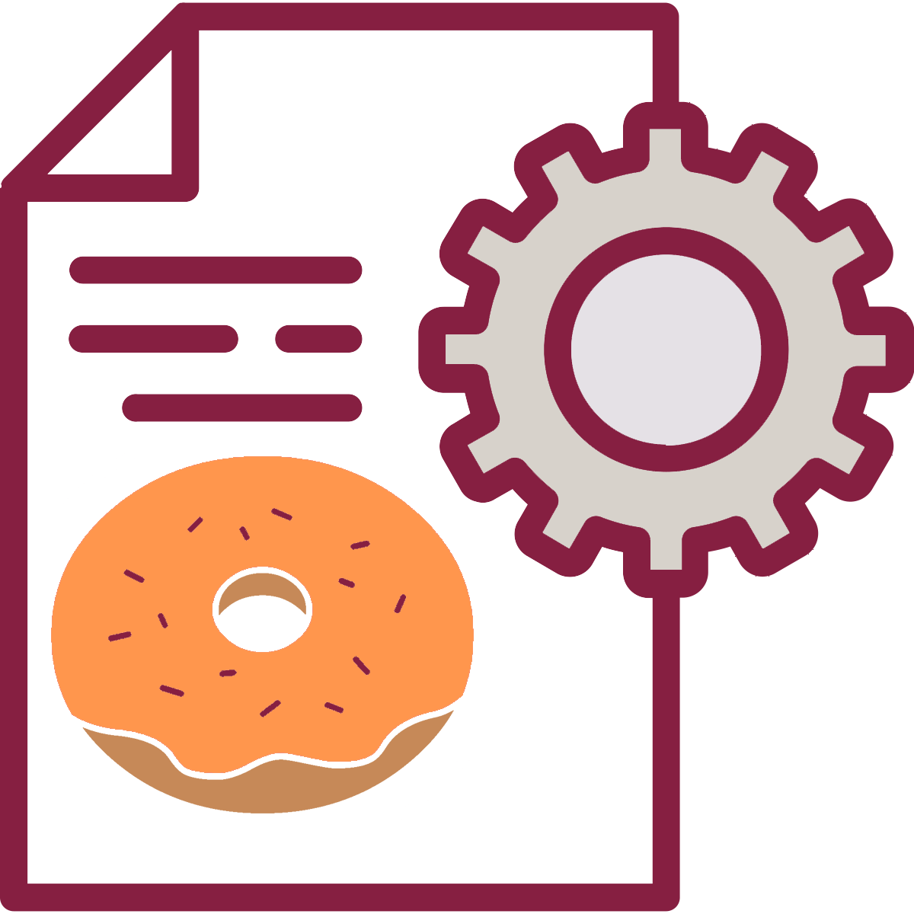

Assignment Dates
- Due Date: By 11:59 PM on Tuesday, May 31, 2022.
- Grace Period: Ends at 11:59 PM on Thursday, June 30, 2022.
What I Want You to Do

You will propose the topic for your recommendation report in a one-page memo that describes your topic. Your memo will use memo headings and fill at least ¾ of the page.
You will explain your topic, why you chose it, and why your readers will be interested. The memo should also include details on your planned research on the topic. You will share your proposal memo with Traci only.
Why I Want You to Do It
The recommendation report is a long project (10–15 pages) that you will need to work on all term. To begin that work you need to choose the topic that you will explore now so that you can begin your research.
Show/Hide Relevant Course Objectives
Relevant Course Objectives
- How to analyze your audience and purpose so that you can choose the best way to present information clearly and effectively.. [CLO 1]
- How to write documents you may encounter in the workplace, such as letters, memos, instructions, proposals, reports, and presentations. [CLO 4]
- Collaborate with classmates in planning, researching, writing, revising, and presenting information. [CLO 5]
Where You Can Find Help
How You Do It
- Review the Recommendation Report Topic page, the Strong Subject Lines page, and the Proposal Memo Criteria to understand the requirements for your topic.
- Skim through pp. 368–388 of the textbook to learn about the format and requirements for a memo.
- Write a proposal memo that tells me the following information:
- The specific topic you have chosen for your recommendation report, so that I can confirm that it will work for the report.
- Why college students at Virginia Tech will be interested in the topic.
- Why you have chosen this topic. I want to know a little about your motivation and interest in the topic.
- How you can observe the situation personally and gather relevant evidence of the problem (in other words, conduct your primary research).
- Anything else that you want me to know about your topic or any questions that you want to ask.
- Check your memo’s format with the Memo Format Self-Review.
Success Tip
You should be able to answer “True” to each question before you submit your work to the Full Draft Submission. If you do not meet each of the criteria listed, your draft will be marked Incomplete and you’ll need to revise.
- Review your draft by comparing it to the Proposal Memo Self-Check.
- Choose one of these options based on your Self-Check:
- If you answered “True” to every question, move on to the next step. You’re ready to submit your work.
- If you did not answer “True” to every question, follow this process:
- Return to your draft and revise so that you can answer “Yes.”
- Review your draft with the Proposal Memo Self-Check after you revise.
- If you answered “True” to every question, move on to the next step. You’re ready to submit your work.
- If you did not answer “True” to every question, continue revising until you can.
- Submit your Full Draft here once you are ready. See How do I submit an online assignment? if you need help with Canvas.
How to Find Feedback After Your Submit Your Work
- Watch for feedback comments from me—find feedback in annotations and comments on your submissions in Canvas.
- I will mark your work Complete in Canvas Grades, if you have met all the criteria for the assignment.
- I will mark your work Incomplete in Canvas Grades if your draft needs revision OR if you do not submit your work by the end of the grace period.
- Watch for this assignment to reappear in your to-do list if you need to revise.